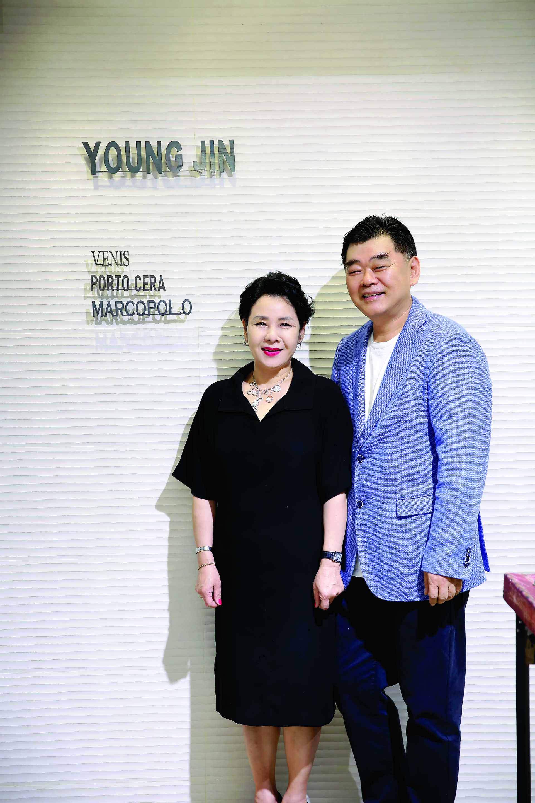
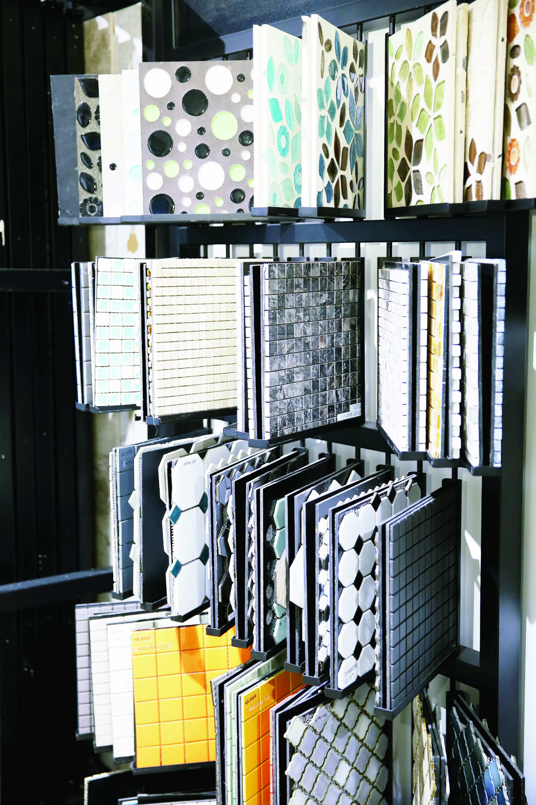

NEWS
-
-
최근 내 손으로 집을 직접 디자인하는 셀프 인테리어가 인기를 끌고 있다.
집을 직접 꾸미는 분위기가 늘어나면서 셀프 인테리어 시장도 같이 성장하고 있다.
한국 건설 산업 연구원에 따르면 국내 인테리어·리모델링 시장이 2000년 9조1,000억 원에서 지난 해 28조4000억 원 규모로 크게 성장했고
2020년에는 41조5000억 원까지 성장할 것으로 예상했다.
셀프 인테리어에서 타일에 대한 소비자들의 관심도 높아지면서, 고급스런 수입타일을 저렴한 가격에 구매할 수 있는 ㈜영진 티아이엠이 주목 받고 있다.
논현동 가구거리 한 가운데에 자리 잡고 있는 ㈜영진티아이엠(대표 하인웅)은
스페인 타일 그룹 ‘포르셀라노사(Porcelanosa)’의 고급 브랜드인 ‘베니스(Venis)’의 한국 독점 에이전트로,
기존에 보기 힘들었던 고급스러운 디자인의 타일을 제공하고 있다.
‘포르셀라노사’그룹의 독자적인 제조 기술과 친환경 공법으로 만들어진 '베니스'의 제품은 집의 거실은 물론 욕실,
주방 등 내부 전체를 고급스럽게 인테리어하기 좋은 제품으로써, 이미 유럽 시장에서 각광을 받고 있다.
하인웅 대표는 “베니스 제품은 스페인 현지 생산 공장에서 최첨단 공법으로 제작되고 있으며, 이태리 및 다른 타일 제조 공장들이 복제할 수 없는 특별한 디자인과 내구성으로 차별화를 두고 있다”고 설명했다.
고품질 임에도 불구하고 합리적인 가격에 판매되고 있어 비용 부담이 덜하기 때문에 집을 꾸미려는 소비자들 사이에 입소문을 타고 큰 호응을 얻고 있는 것 같다고 덧붙였다.
또한, “앞으로도 다양한 제품을 선보일 예정이며, 타일을 구매할 때 색상과 디자인은 사진으로 보는 것과
실제 느낌이 많은 차이가 있기 때문에 매장에 전시된 제품들을 직접 확인하고 선택하는 것이 좋다.”고 조언했다.
한편, ㈜영진 티아이엠의 전시 매장은 강남구 논현동 7호선 학동역 4번 출구 도보 3분 거리에 위치하고 있다.
온라인 중앙일보
▶SNS에서 만나는 중앙일보 [페이스북] [트위터] [네이버포스트]
ⓒ중앙일보(http://joongang.co.kr) and JTBC Content Hub Co., Ltd. 무단 전재 및 재배포 금지
-
-
-
최근 방송을 통해 집을 직접 디자인하는 셀프 인테리어가 많이 알려지면서, 셀프 인테리어에 대한 관심이 급증하고 있다.
이러한 분위기는 셀프 인테리어 시장의 성장에도 영향을 준 것으로 나타났다. 한국 건설 산업 연구원 조사에 따르면 국내 인테리어 시장이2000년 9조1,000억 원에서 지난 해 28조4,000억 원 규모로 크게성장했다고 한다.
셀프 인테리어의 소비자 진입 장벽이 낮아지면서 공구 및 자재 까지 직접 구매하는 소비자들도 역시 늘어났다.
특히 타일의 경우 타일만으로도 집의 분위기를 크게 바꿀 수 있기 때문에 고급 타일에대한 소비자의 관심은 높은 편이다.
㈜영진 티아이엠은 고급스런 수입타일을 합리적인 가격으로 제공하면서 소비자들에게 주목을 받고 있다.
논현동 가구거리 중심에 위치한 ㈜영진 티아이엠(대표 하인웅)은스페인 타일 그룹 ‘포르셀라노사 (Porcelanosa)’의 고급 브랜드인‘베니스(Venis)’의 한국 독점 에이전트로서 세련되고
고급스러운디자인의 타일을 제공하고 있다. ‘베니스’의 제품은 독자적인 제조 기술과 공법으로
이미 유럽 시장에서 검증이 되어 집의 거실뿐만 아니라, 욕실, 주방 등 내부 전체를 고급스럽게 인테리어하기좋은 제품으로 정평이 나있다.
㈜영진 티아이엠의 베니스 제품은 스페인 현지 생산 공장에서 최첨단 공법으로 제작되고 있으며,
흉내 낼 수 없는 유니크한 디자인과 차별화된 내구성을 갖춘 타일이라고 설명했다.
하인웅 대표는 “고급스러운 인테리어를 원하는 분들께 정말 안성맞춤인 타일이며,
가격 부담이 크지 않은 합리적인 가격대를 형성하고 있어 소비자들이 많이 찾는 것 같다. 앞으로 다양한 고품질의타일을 계속 선보일 예정이다.”고 전했다.
셀프 인테리어를 할 때 제품의 색상과 디자인은 모니터 화면 또는사진으로 보는 것보다 실물을 직접 보고 전문가의 상담을 통해 구매하는 것이 좋다고 조언했다.
한편, ㈜영진 티아이엠은 학동역 4번 출구에 전시 매장을 운영하고 있다.
[김정한기자]
▶일간스포츠 [페이스북] [트위터] [웨이보]
ⓒ일간스포츠(http://isplus.joins.com) and JTBC Content Hub Co., Ltd. 무단 전재 및 재배포 금지
-
‘영진 TIM’ 하인웅·이승은 대표이사 부부
“소비자가 원하는 좋은 가격과 품질이 우리의 자부심”
영진 TIM은 스페인 명품 타일 그룹인 ‘포르셀라노사(PORCELANOSA)’와 중국 최대 타일 회사 ‘마르코폴로(MARCO POLO)’의 한국 공식 에이전트다. 특히 포르셀라노사의 고급브랜드인 ‘베니스(VENIS)’의 한국 독점 판매 딜러로서 최상의 품질과 합리적인 가격을 실현시키기 위해 자체 브랜드까지 런칭해 지난 20여 년간 세계를 향한 비전을 꾸준히 이어 왔다. 영진 TIM의 공동대표를 맡고 있는 하인웅·이승은 씨 부부를 만나 타일디자인과 인테리어에 대한 전문적인 조언을 들어봤다. 강남구 논현동 가구거리 중심에 위치한 영진 TIM은 1996년 타일사업을 시작한 하인웅·이승은 씨 부부의 20년 노하우가 집약된 공간이다. 상큼한 색상의 독특한 타일로 건물외벽 디자인을 마감한 본사 건물은 멀리서부터 눈에 띄어 초행길이라도 어렵지 않게 찾아갈 수 있었다. 초기부터 건설납품 위주의 사업을 했다는 대표 부부는 최근 건설 분양이 줄어들면서 그 동안 쌓아 온 노하우를 고객들에게 직접 전달할 수 있도록 소비자 대상의 사업으로 전환을 꾀했다. 오랜 유통사업의 경험으로 소비자들에게 더 저렴하게 물건을 공급할 수 있도록 지난해까지 준비를 마치고 올해부터 집중적으로 소매사업에 뛰어든 것이다.
셀프인테리어 열풍, 상담료는 무료

사실 ‘타일’이라는 건축자재는 그 동안 소비자들이 직접 선택하는 개념의 것이 아니었다. 벽지라면 모를까 타일은 만들어 놓은 것을 일방적으로 받아들여야 하는 구조였다. “요즘 추세는 각자 자신이 원하는 디자인을 찾아서 하는 것입니다. 의욕은 있지만 인테리어를 잘 모르는 분들을 위해 저희 영진에서 상담을 해드립니다. 먼저 분위기가 모던인지 앤틱인지 파악하고 전체적 구성이 어떤 컬러인지를 알면 상담이 한결 수월해집니다.” 타일은 벽지처럼 쉽게 바꿀 수 있는 자재가 아니다. 그래서 소비자의 결정이 늦어질 수밖에 없다. 한번은 직접 집을 짓는 분을 위해 타일 인테리어 상담을 아침 9시부터 오후 4시까지 한 적도 있다고 했다. 물론 모든 상담료는 무료지만 토요일이 다른 요일에 비해 한가한 시간이라 좀 더 여유 있는 상담을 진행할 수 있다고 한다. 또한 모든 소비자들의 요구는 좀 더 ‘저렴하게’이기에 하인웅 대표는 좋은 품질과 좋은 가격을 잘 매치해 권한다고 했다. “가격에 구애받기 보다는 그 집에 어울리는 타일을 골라드리려고 노력합니다. 타일이라는 게 한 번 선택하면 10년도 가야하는 것이라 쉽게 결정할 수 없다는 것을 너무나 잘 알기 때문입니다.”
욕실을 탈출한 타일, 심플 is the 베스트
그 동안 타일 인테리어의 중심은 ‘욕실’이었다. 더 추가한다면 베란다와 현관 바닥 정도. 하지만 셀프 인테리어의 추세로 타일은 욕실을 탈출해 거실, 침실, 주방까지 각광받는 인테리어 소재가 돼가고 있다. 각광받는다는 것은 구입에 대한 부담이 적다는 뜻도 된다. 즉 저렴한 가격이 타일의 또 다른 매력인 된 것이다. “7~8년 전부터 타일 생산방식이 드럼식 프린팅에서 디지털 프린팅으로 바뀌었습니다. 큰 변화가 온 거죠. 덕분에 적은 주문량에도 프린팅이 가능해졌고 당연히 가격도 저렴해졌습니다. 요즘은 이탈리아와 스페인에서 좋은 디자인을 구입해 중국이나 인도 공장에서 제품을 만듭니다. 디지털 프린트 시대가 되니 공장이 어디에 있던 디자인만 잘 나오면 품질의 차이가 없습니다. 혁명 같은 일이라고 할 수 있습니다. 심지어는 한 장도 따로 뽑을 수 있습니다. 물론 퀄리티 컨트롤이 어려우니 안할 뿐이죠.” 물론 타일 가격은 저렴해졌지만 시공비가 비싼 것은 여전한 단점하다. 벽지 시공비의 두세 배 정도가 든다. 하지만 영진 TIM의 안살림을 이끄는 이승은 대표의 생각은 다르다. “벽지는 내추럴한 멋과 섬세함이 부족하죠. 타일은 이러한 단점을 극복할 뿐 아니라 청소와 관리가 쉽고 오래 쓸 수 있어 초기비용은 더 들지만 기간으로 따져보면 차이가 없습니다. 저희 집도 96년에 시공한 타일을 아직 쓰고 있어요.” 이 대표는 또한 타일이 대리석을 대신하는 인테리어 자재로 많이 쓰인다고 설명했다. “대리석은 자연석이다 보니 재질은 가장 좋지만 관리가 힘들어요. 하중이 무거워서 시공도 어렵고 연마해서 쓰는 자연석이다 보니 오염을 막기 위해 청소와 왁싱 등 관리를 세심하게 해줘야하죠. 타일은 무게도 가볍지만 대리석의 기능과 똑같이 여름엔 시원하고 겨울엔 따뜻합니다. 그리고 디지털 프린팅 덕분에 대리석 프린팅을 하면 우리도 잘 구분 못할 정도입니다.” 이 대표와 하 대표 부부는 셀프인테리어를 꿈꾸는 독자들에게 ‘타일은 심플해야한다’고 강조했다. 어떤 타일이든 도화지 같은 백지가 타일의 역할이라고 먼저 생각하고, 포인트는 타일이 아닌 다른 액세서리로 줄 것을 조언했다. “타일 자체를 튀고 예쁘게 하는 것은 구매욕을 자극하는 것입니다. 하지만 튀는 것들은 금방 싫증이 나게 마련이죠. 되도록 그레이 같은 라이트한 컬러를 선택하시는 게 좋습니다. 또한 타일은 사진으로 보는 것과 실제 느낌이 많은 차이가 있으니 꼭 매장에 나와 전시된 제품들을 직접 둘러보는 것이 좋습니다.” 그런 이유인지 영진 TIM 본사에 전시된 타일들은 마음을 차분히 안정시키는 잔잔한 컬러가 대부분이었다. 알록달록 정신없는 타일들이 즐비한 일반적인 타일가게와는 완전 다른 분위기였다. 인터뷰 촬영 진행 중에도 많은 손님들이 매장을 둘러보며 이 대표와 하 대표 부부에게 조언을 구하고 있었다. 조용하고 럭셔리한 매장 분위기와 함께 한 명 한 명에게 성심껏 답변하는 부부의 모습이 무척 인상적이었다.
타일계의 에르메스 ‘베니스’, 가격은?

영진 TIM은 스페인 최고급 타일 베니스와 중국의 마르코폴로 한국총판 업체다. 특히 스페인 현지 공장에서 최첨단 공법으로 만든 베니스 시리즈는 디자인이 워낙 특이하고 다른 업체에서 복제할 수 없는 기술력을 갖고 있다. 소비자들이 브랜드 이름을 몰라도 직접 매장에 와서 보면 그 퀄리티에 놀라 대부분 베니스 타일을 선택한다고 했다. 타일계의 ‘에르메스’라고 불리는 베니스는 세계타일 순위 5위안에 들고 벽타일은 세계 1위지만 가격은 의외였다. 가장 비싼 아트월용 타일이 1평방미터에 6만6천 원으로 고품질이지만 합리적인 가격에 판매되고 있었다. 타일 사업과 함께 해온지 20년이 넘은 하 대표에게 가장 힘들었던 순간은 건설경기가 얼어붙었던 IMF 시절이라고 했다. 그렇다면 보람된 순간은 언제일까? “제가 만든 제품이 시공돼있는 것을 봤을 때입니다. 공항이나 일반 건물들도 있지만 한 번은 친구 집에 갔는데 거기 저희 제품이 있는 거예요. 그리고 여주에 있는 자유컨트리클럽에도 제가 디자인한 바살티나 타일이 붙어있더군요. 정말 즐거웠습니다.” 자신의 작품은 어디 있건 당연히 다 알아본다고 했다. 조각가의 작품처럼 타일산업도 제조예술이기 때문이다. 그래도 가장 보람된 점은 ‘소비자가 원하는 좋은 가격과 좋은 품질을 제공할 수 있다’는 것이라고 한다. 그리고 이것이 영진 TIM의 자부심이라고 했다. 소비자와 만나려는 노력은 제품에서만 그치지 않는다. 매년 스페인과 이탈리아에서 열리는 타일 페어에 참가해 패션의 흐름을 놓치지 않으려 노력하고 있다. 또한 아름다운 타일들로 둘러싸인 본사에서는 소비자들을 위한 작은 음악회 등 특별한 공연을 기획하고 있다. 이밖에도 광주 오포에 아울렛 매장을 오픈해 물류비 부담을 줄이고 재고 상품들을 좀 더 저렴한 가격에 판매할 예정이다. 현재 영진 TIM은 수입총판 제품 외에도 인도와 중국 등지에서 자체 고유 브랜드 제품을 생산하고 있다. 내년부터는 해외 타일산업 박람회 등에 참가해 영진의 수출용 제품을 홍보할 예정이다. 아직까지 한국산 타일을 해외로 수출하는 업체는 거의 없기에 영진 TIM은 처음이라는 생각을 갖고 최선의 노력을 기울일 것이라고 전했다.
최주연 기자 4betterworld@naver.com
<저작권자 © 여성시대 Live, 무단 전재 및 재배포 금지>